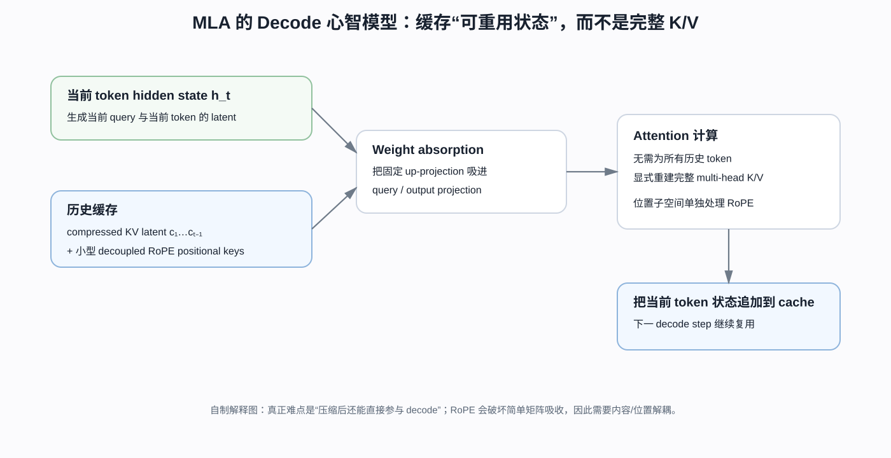
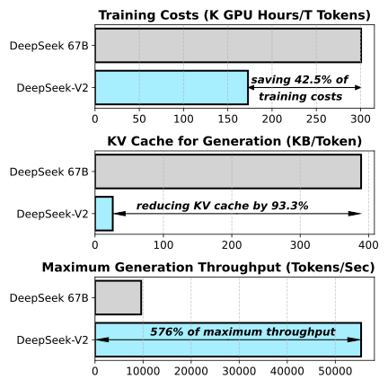
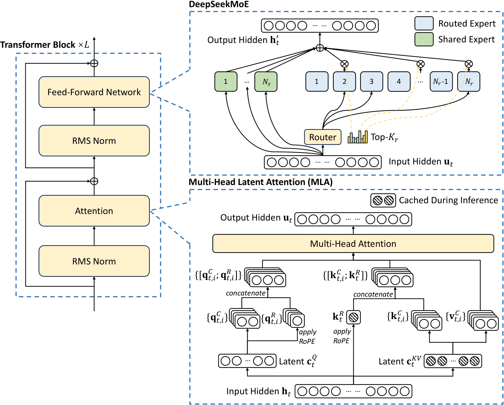
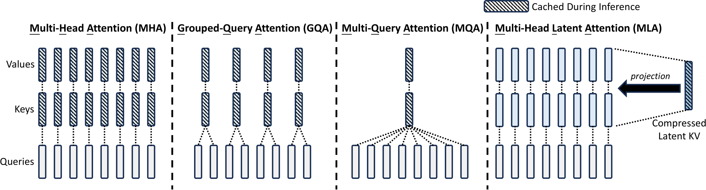

DeepSeek-V2：MLA 真正的关键不是低秩，而是让低维缓存直接参与 Decode
论文：DeepSeek-AI, DeepSeek-V2: A Strong, Economical, and Efficient Mixture-of-Experts Language Model，本文以 arXiv v5（2024-06-19）为基线。
类型：B · 完整模型技术报告；同时是 MLA 第一次被完整提出和验证的模型论文。
一句话定位：这篇文章最值得下钻的是 MLA 怎样把“历史多头 K/V”改写成可直接参与 Decode 的低维缓存状态，并用 weight absorption + decoupled RoPE 避免每一步重新展开完整 K/V。
为什么现在读它：DeepSeek-V3 已经告诉我们结果——只缓存压缩 latent 与一小块位置状态，就能把 KV Cache 大幅降低。但如果不知道矩阵吸收为什么成立、RoPE 为什么破坏吸收、decoupled RoPE 又怎样修复它，MLA 仍然只是一个背诵名词。
阅读导航：这是 V3 的 Attention 技术下钻页
从哪里来
RoPE —— 如果 §7–§8 的位置相关旋转矩阵为什么破坏 absorption 看不懂，再回查。
读完往哪里去
本文重点
MHA / MQA / GQA 与 MLA 到底分别在压缩什么；
为什么“低秩压缩 K/V”本身还不足以带来高效 Decode；
key / value up-projection 为什么可以吸收到 query / output 路径；
RoPE 为什么让固定矩阵 absorption 失效；
decoupled RoPE 为什么只需额外保留一小段 positional key；
理论 cache reduction、论文报告的 93.3% reduction 与 5.76× throughput 为什么不能混成一个指标。
如果只想解决一个问题
“为什么 MLA 不只是低秩压缩，而是真正减少 decode cache？”
直接阅读本文 §3–§10；其他 MoE、后训练内容可以先跳过。

自制解释图，不是原论文 Figure。先抓住“缓存什么”这一件事：历史 token 缓存 compressed latent 和小型位置状态；weight absorption 让这些低维状态不必在每个 decode step 显式恢复成完整 multi-head K/V。
DeepSeek-V2 最值得学习的一条线，不是“236B MoE 模型有多强”，而是作者怎样从一个非常具体的推理瓶颈出发，一步步把 Attention 的参数化重写掉。理解完这条线，再回到 DeepSeek-V3，你会发现 V3 的 MLA 不再是一串陌生符号，而是一套为了 decode cache 设计出来的状态表示。
MHA 的历史 K/V 太大
↓
MQA / GQA 通过共享 K/V 减缓存
↓
但共享越强，K/V 表示自由度越小
↓
把 K/V 联合压成低维 latent
↓
问题：Decode 时难道还要反复解压全部历史 K/V？
↓
固定线性投影可以吸收到 Q 与 O 中
↓
历史 K/V 不需要显式重建
↓
RoPE 插入位置相关矩阵后，吸收失效
↓
把内容与位置拆成两个子空间
↓
最终只缓存 latent + shared positional key
1. Figure 1 先告诉我们：V2 想把“训练贵”和“推理贵”拆开解决

先看三行分别测什么：第一行是每训练 1T tokens 的 GPU hours；第二行是 generation KV Cache；第三行是最大 generation throughput。它们对应不同瓶颈，不能把三条收益都归因给同一个模块。
DeepSeek-V2 的规模是：
相对 dense DeepSeek 67B，论文报告每 1T tokens 的训练 GPU hours 从：
约下降：
部署侧又报告 KV Cache 减少约：
单节点 8×H800 的最大 generation throughput 约为 DeepSeek 67B 的：
这些数字不能合成一句“MLA 让 V2 便宜 42.5% 并快 5.76 倍”。
更准确的因果拆分是：
FFN：
DeepSeekMoE
→ 少量 active experts
→ 降低每 token 计算
→ 训练更经济
Attention：
MLA
→ 缩小 KV Cache
→ 降低历史状态容量与读带宽
完整 Serving：
MLA + KV 量化 + FP8 权重 + kernel + 更大 batch
→ 最终吞吐
2. 先看完整模型：MLA 和 DeepSeekMoE 分别改了 Transformer 的哪一半

左侧仍是 pre-norm Transformer block；右下展开 MLA；右上展开 DeepSeekMoE。斜线阴影对应 inference 时需要保留的状态。
V2 主模型：
Attention：
MLA：
MoE 侧：
第 1 层 FFN 保持 dense；
其余 FFN 使用 DeepSeekMoE；
每层 2 个 shared experts；
160 个 routed experts；
每 token 激活 6 个 routed experts；
每 expert intermediate hidden size 为 1536。
所以一条 token 的主干仍然是：
token
↓
Embedding
↓
60 × Transformer blocks
├── RMSNorm
├── MLA
├── Residual
├── RMSNorm
└── Dense FFN / DeepSeekMoE
↓
LM Head
↓
Next-token logits
先记一句：
MLA 改 Attention 的状态表示；DeepSeekMoE 改 FFN 的参数激活方式。
3. 从 MHA 开始：KV Cache 为什么会变成 Decode 瓶颈？
第 \(t\) 个 token 的 hidden state：
普通 MHA：
每个 head：
第 \(i\) 个 head：
生成第 \(t+1\) 个 token 时，过去的 query 已经没用了，但历史 K/V 还要被新 query 访问。
于是每层、每个历史 token 需要：
个 cache 元素，整个模型：
按 V2 的 head 配置：
个元素/token/layer。
60 层则约：
个元素/token。
所以长上下文 Decode 的压力不只是显存容量，还包括每一步越来越大的：
HBM memory traffic。
4. MQA/GQA 已经能减 KV，为什么还需要 MLA？

看斜线阴影即可理解四者的压缩轴：MHA 缓存每个 head 的 K/V；GQA 缓存若干组；MQA 只缓存一组；MLA 缓存的是可以重建多头 K/V 的 compressed latent。
MHA：
GQA：
MQA：
MQA 的缓存很小，但代价也很直接：
所有 query heads 被迫访问同一套 K/V representation。
GQA 只是把这种共享减弱。
所以 MLA 真正提出的问题是：
能不能不直接减少最终 K/V 的多头表示自由度，而只压缩“缓存状态”？
它的关键变化是：
缓存空间与最终 K/V 表示空间不再是同一个空间。
5. MLA 第一步：K/V 可以很多，但缓存只存一个低维 latent
MLA 定义：
其中：
V2：
再由同一个 latent 重建 content key/value：
完整多头 K/V 的单边维度是：
所以表面结构是：
h_t [5120]
↓ W^DKV
c_t^KV [512]
├── W^UK → K content [16384]
└── W^UV → V content [16384]
K 和 V 共享同一个 latent，因此不是分别压缩 K、V，而是：
joint KV compression。
但现在必须立刻提出一个反问：
Attention 最后仍然需要 K 与 V。Decode 时是不是还得把全部历史 latent 每一步都展开回完整 K/V？
如果需要，那么它只是：
存储时压缩
→ 使用时全部解压
缓存虽然小了，历史重建计算却会很重。
所以 MLA 最重要的一步还没出现。
6. MLA 的灵魂：为什么历史 K/V 根本不需要显式重建？
6.1 Key up-projection 可以吸收到 Query 路径
历史 content key：
当前 content query 为 \(q_t^C\)。
score：
利用恒等式：
得到：
定义：
那么：
历史 key 不需要显式恢复。
如果 query 自身也来自：
则：
两个固定矩阵可以预先组合：
Decode 时只需要：
6.2 Value up-projection 可以吸收到 Output 路径
普通内容聚合：
而：
代入：
后面还有 output projection：
所以：
定义：
得到：
于是历史 value 也无需逐 token 上投影。
6.3 这才是 MLA 与普通“压缩-解压”的真正差别
实际 Decode 可以变成：
缓存 c_j^KV
↓
当前 query 映射到 latent-compatible space
↓
直接与历史 c_j^KV 算 score
↓
直接对 latent 做 weighted sum
↓
一次 fused output projection
所以 MLA 不是一个简单 autoencoder。
它实际上重新参数化了 Attention，使：
低维 latent 本身就是可以直接参与 Decode 的状态。
这一步才是 MLA 真正改变 serving cost 的原因。
7. 然而一加 RoPE，刚才的矩阵吸收就坏了
如果直接对 content key 做 RoPE：
query：
score：
这里：
依赖当前 query 位置 \(t\) 和历史 key 位置 \(j\)。
所以：
不能提前合成为一个和位置无关的固定权重。
7.1 为什么论文说 RoPE 和 low-rank KV compression “不兼容”？
不是因为数学上不能算。
当然可以算：
真正的问题是：
这样会破坏前一节最重要的 inference-time weight absorption。
一旦 \(W^{UK}\) 不能被吸收到 query 路径，低维 cache 就很难直接成为最终 Attention 的工作状态。
所以“不兼容”的准确含义是：
RoPE 的位置相关变换切断了本来可以折叠的固定线性链。
8. Decoupled RoPE：把内容与位置拆成两条子空间
DeepSeek 没有放弃 RoPE，而是重新问：
RoPE 是否必须作用于全部 content features？
于是 Query/Key 被拆成：
content component
+
position component
8.1 Content Query
先压 Query：
V2：
然后：
这一部分不做 RoPE，所以 weight absorption 仍成立。
8.2 Positional Query
额外生成：
每个 head 都有自己的：
8.3 Positional Key
Key 侧只生成一份共享的：
V2：
最终每个 head：
总内积自然分成：
可以把它理解成：
Content subspace
→ 语义匹配
→ 不做 RoPE
→ 保留矩阵吸收
Position subspace
→ 位置关系
→ 做 RoPE
→ 只保留很小的 shared positional key
因此真正缓存：
和：
每 token、每层：
个元素。
V2：
而同样 head 配置的 MHA：
架构级原始元素比：
9. MLA、GQA、MQA 到底在压缩什么不同的自由度？
论文 Table 1：
Attention |
KV Cache per token |
|---|---|
MHA |
\(2n_hd_hl\) |
GQA |
\(2n_gd_hl\) |
MQA |
\(2d_hl\) |
MLA |
\((d_c+d_h^R)l\) |
V2 使用：
所以：
若把这个 cache 量写成等价 GQA group 数：
可得：
也就是说，从 cache 元素数看，MLA 大致相当于只有 2.25 个 KV groups 的 GQA。
但它绝不是“2.25 个 K/V heads”。
MQA/GQA
压缩的是：
最终 K/V head 数。
很多 query heads
→ 共享更少 K/V heads
MLA
压缩的是：
生成所有 K/V 的底层 latent 自由度。
c^KV
├── W^UK → 多头 K
└── W^UV → 多头 V
所以即使 latent 较小，不同 head 仍能通过不同 projection 形成不同表示。
这就是 MLA 为什么可能在相近 cache 预算下比 MQA/GQA 保留更强 capability 的核心直觉。
但它不是数学定理。
最终仍需要原论文的 attention ablation 来验证。
10. Query 也做低秩压缩，但它解决的不是 KV Cache
论文还定义：
再上投影：
一个常见误解是：
Query compression 也为了减少 KV Cache。
不是。
Query 不需要跨 Decode steps 长期保存。
它主要影响：
训练时 activation memory。
所以同样一个 low-rank 结构：
KV compression： 主要是 inference-state optimization；
Q compression： 主要是 training-memory optimization。
完整模型拆解里，必须区分“数学形状相似”和“系统目标相同”这两件事。
11. DeepSeekMoE：V2 把 FFN 的计算问题改成了“容量、路由和通信”的问题
MLA 改 Attention。
另一半 FFN 使用 DeepSeekMoE。
V2 每个 MoE 层：
每 token 激活：
DeepSeekMoE 的两个核心思想来自独立原始方法论文：
fine-grained expert segmentation；
shared expert isolation。
在这篇模型报告里，我们先只理解它们的模型级作用：
shared experts 承担更通用的知识；routed experts 更有空间做 specialization。
为什么这会减少知识冗余、为什么更细专家能增加组合自由度，要留到下一篇 A 类原始方法论文。
11.1 Device-limited routing：Router 已经被硬件拓扑约束
如果 Top-K experts 分散在很多 GPU 上：
一个 token activation 就要跨设备发送很多次。
所以 V2 不直接在全部专家里做 unrestricted Top-K。
它先选最多：
个候选设备，再只从这些设备上的 experts 选 Top-K。
V2：
论文报告当：
时，模型性能大致能与 unrestricted Top-K 对齐。
这是一件很有代表性的事：
路由不再只是“哪个专家最适合这个 token”，还必须考虑专家在哪台机器上。
11.2 为什么 V2 设计了三种 balance loss？
V2 分别有：
expert-level balance；
device-level balance；
communication balance。
原因是三个尺度并不等价。
专家 token 数平均：
不代表每张 GPU 的总计算相同。
每张 GPU 的计算平均：
也不代表它收到的远程 token 流量相同。
所以 V2 把系统目标直接写进训练：
这套设计非常重要，因为它直接暴露出 V3 后来要解决的矛盾：
系统平衡项越多，主任务梯度越容易被“为了系统均衡”而扭曲。
V3 的 routing bias 并不是孤立 trick，而是在回应 V2 的这个结构问题。
11.3 为什么还有 token dropping？
balance loss 只是软约束。
即使长期平均比较均衡，某一个 batch 里仍可能出现局部过载。
所以 V2 训练时还会在设备容量超过预算时：
drop affinity 最低的 tokens。
同时约 10% training sequences 的 tokens 永不 drop，以缓解训练/推理语义差异。
这说明：
负载均衡从来不是一个纯模型质量问题，它还是一个严格的运行时容量问题。
12. 训练系统：V2 已经有 V3 DualPipe 的前奏
V2 使用：
16-way zero-bubble Pipeline Parallelism；
8-way Expert Parallelism；
ZeRO-1 Data Parallelism；
不使用 Tensor Parallelism。
论文给出的理由是：
active parameters 相对少；
一部分 activation 可以 recompute；
因而不必为了模型放置强行引入 TP；
避免额外 TP communication。
它还显式 overlap：
shared-expert computation
与：
expert-parallel all-to-all communication。
于是从 V2 到 V3 的工程演化其实很连续：
V2
EP8
+ shared expert / all-to-all overlap
+ zero-bubble PP
↓
规模继续放大
↓
V3
EP64
+ 更严重跨节点通信
+ DualPipe
+ 更细粒度的 forward/backward/dispatch/combine overlap
所以 DualPipe 不是突然冒出的“新训练技巧”。
它是同一套 MoE 架构把通信压力继续放大后的自然结果。
13. 预训练：8.1T tokens 不是重点，重点是 MLA 还改变了长上下文扩展应该作用在哪条路径
V2 的预训练 corpus：
Tokenizer：
byte-level BPE；
vocab： $\( 100K. \)$
主模型：
AdamW：
最大 learning rate：
前 2K steps 线性 warmup。
约训练到：
token budget 后，LR 乘：
约到：
后再乘一次：
batch size：
主预训练最大 sequence length：
13.1 4K 怎么扩到 128K？
预训练之后使用 YaRN。
但这里真正值得注意的是：
YaRN 只施加到 MLA 的 decoupled shared key \(k_t^R\)。
为什么？
因为：
content latent： $\( c_t^{KV} \)$ 不承担 RoPE；
positional subspace： $\( q^R,k^R \)$ 才编码位置。
所以 context extension 实际只需要改位置路径。
V2 长上下文阶段：
训练： $\( 1000\text{ steps}; \)$
sequence length： $\( 32K; \)$
batch： $\( 576. \)$
虽然只在 32K sequence 上训练，论文 NIAH 测到 128K。
这说明 decoupled RoPE 还有一个很自然的副作用：
位置扩展和 content representation 被更清楚地分开了。
14. Post-training：GRPO 已经在 V2 出现，但 V2 还不是 R1
V2 的 SFT：
SFT 训练：
2 epochs；
learning rate： $\( 5\times10^{-6}. \)$
之后采用 DeepSeekMath 提出的 GRPO。
在这篇模型报告中，我们先只保留模型级意义：
GRPO 不需要训练一个通常和 policy 同规模的 critic，而通过同一 prompt 下的一组 rollout rewards 构造相对 baseline。
这会显著降低超大模型 RL 的额外模型状态。
但 V2 的 RL 主要仍然是：
general alignment / preference optimization。
它还不是 DeepSeek-R1 那种：
以可验证 reasoning reward 为核心的大规模 reasoning RL。
因此技术谱系更准确地写：
DeepSeekMath
→ PROPOSES GRPO
DeepSeek-V2
→ ADOPTS GRPO for alignment
DeepSeek-V3
→ continues GRPO-based post-training
DeepSeek-R1
→ pushes RL much further into reasoning
完整的 GRPO 推导留到 DeepSeekMath。
15. 推理效率：理论 cache、论文的 93.3% 和 5.76× 吞吐是三个不同层次
15.1 架构级理论 cache
MLA：
MHA：
这是元素数量级。
15.2 实际 deployment cache
论文实际 serving 还用了：
KV Cache quantization；
平均每个 KV 元素约： $\( 6\text{ bits}. \)$
所以 Figure 1 的：
reduction 是完整部署条件下的工程比较。
它不等于：
15.3 实际 throughput
部署时还把参数转为 FP8。
所以：
maximum generation throughput 是下面这些因素共同作用：
MLA
+ KV cache quantization
+ FP8 parameter storage
+ 更大的可服务 batch
+ CUDA / fused kernels
+ 请求长度分布
+ serving scheduler
因此最重要的系统结论是：
FLOPs、KV capacity、HBM traffic、batch capacity、latency 和 throughput 必须分开讨论。
不能因为缓存理论减少 56.9 倍，就宣称 throughput 理应增加 56.9 倍。
16. 论文细读：作者是怎样一步步“逼出” MLA 的？
16.1 Introduction 先建立 scaling 的双重税
论文开头先承认一个大家已经接受的事实：
参数更多，通常能带来更强模型能力。
但作者马上转折：
更大模型同时意味着更高 training cost 和更差 inference efficiency。
于是研究问题不是：
再做一个更大的 LLM。
而是：
怎样让 scaling 的能力收益，不必完整支付 dense training 与 heavy inference 两份代价？
这也是为什么 V2 同时改 Attention 与 FFN。
作者不是在同一层面堆两个“创新点”，而是把成本拆成两条：
Attention state cost
→ MLA
FFN compute cost
→ DeepSeekMoE
16.2 为什么 Introduction 先提 MQA/GQA，再提 MLA？
这是很关键的论证顺序。
作者先说：
MHA 的 heavy KV Cache 已经是 generation 的重要障碍。
然后没有立刻宣布自己的方法，而是承认已有解法：
MQA；
GQA。
这一步是在回答读者最自然的反驳：
“减少 KV Cache 不是早就有人做了吗？”
接着作者指出：
这些方法通过更强的 K/V 共享换取 cache reduction，在作者的实验语境下会带来 capability trade-off。
于是 MLA 的目标才真正被约束出来：
不仅要小 cache，还要避免把多头 K/V 的表达自由度直接砍掉。
因此论文用 “best of both worlds” 一类表达时，不是宣传口号，而是前面两段逻辑推出来的技术指标：
cache 接近极低；
capability 仍强。
16.3 §2.1.1 重新讲标准 MHA，不是因为作者怕读者不会 Attention
这一节真正的任务是建立一个成本公式：
后面所有：
与：
都需要拿它做参照。
所以这一节属于论文论证，不只是背景教程。
16.4 §2.1.2 最重要的句子不是 “low-rank joint compression”
如果只看到：
K/V joint compression
很容易把 MLA 理解成：
存的时候压缩
→ 用的时候解压
但作者紧接着强调：
inference 时甚至不需要把 keys 和 values 显式算出来，因为 up-projection 可以吸收到 query/output projection。
这句话才把 MLA 从：
存储压缩
变成：
Attention 执行图的重新参数化。
这也是我们为什么必须自己补完整矩阵推导。
16.5 §2.1.3 是一段很典型的“方法刚成立，作者马上主动找反例”
上一节刚说：
固定线性矩阵可以 absorption。
下一节立即承认：
我们还希望保留 RoPE，但 RoPE 会破坏这个性质。
这段写法非常值得学习。
作者没有把 RoPE 当成一个无关模块，而是指出：
位置相关旋转矩阵插入以后，前一节最关键的推理优化不再成立。
于是 decoupled RoPE 是被一个真实冲突逼出来的。
它不是：
“为了模型更强，再加一点位置编码 trick。”
而是：
为了保住 latent cache 的推理价值，必须重组 position path。
16.6 Figure 3 为什么比 Figure 2 更适合第一次理解 MLA？
Figure 2 给完整架构。
优点是完整，缺点是：
projection 很多；
content / position 两路混在一起；
初读很容易陷入符号。
Figure 3 把：
MHA；
GQA；
MQA；
MLA
并排。
它先让读者回答一个更简单的问题：
到底缓存了什么？
所以更好的学习顺序反而是：
Figure 3：看不同 attention 的 cache state；
Figure 2：看 MLA 如何生成这些 state；
公式：证明为什么 latent 可以直接参与 Decode。
这也是技术博客不必机械跟论文版面顺序的原因。
16.7 V2 的三个 balance loss 为什么今天读起来显得很重？
因为我们已经读过 V3。
回看 V2：
expert-level loss；
device-level loss；
communication loss；
device-limited routing；
token dropping。
可以看到一个明显趋势：
为了让 MoE 在真实集群上跑得稳，越来越多系统约束被写进训练目标和 router。
V3 的 routing bias 就是在回答：
这些系统要求是否一定要通过主 loss 的梯度来实现？
所以 V2 的复杂机制不是“失败”。
它提供了下一代改进最清楚的问题定义。
16.8 Discussion 已经把路线从“高效 base model”指向“reasoning post-training”
V2 的后段开始讨论：
SFT 数据量；
RL alignment tax；
online RL；
reasoning 的不足。
这说明 DeepSeek 的研究主线正在从：
怎样把大模型训练和推理做得更经济
转向：
怎样让 post-training 真正带来 reasoning 能力，而不只是 preference alignment。
这条线会在 DeepSeekMath、V3 和 R1 中继续展开。
17. 从 V2 回看 V3：哪些是继承，哪些是改造？
MLA
DeepSeek-V2
→ PROPOSES MLA
DeepSeek-V3
→ ADOPTS / EXTENDS MLA
核心仍是：
KV joint compression；
Query compression；
decoupled RoPE；
latent + positional key cache。
DeepSeekMoE
DeepSeekMoE 原始论文
→ PROPOSES
DeepSeek-V2
→ ADOPTS
DeepSeek-V3
→ ADOPTS / EXTENDS
Load balance
V2：
expert-level auxiliary loss
+ device-level auxiliary loss
+ communication auxiliary loss
+ device-limited routing
+ token dropping
V3：
routing bias 主导 batch-wise balance
+ 很小 sequence-wise auxiliary loss
所以 V3 的 auxiliary-loss-free 设计有非常明确的前代问题。
Training system
V2：
PP16
EP8
ZeRO-1
no TP
communication overlap
V3：
PP16
EP64
ZeRO-1
no TP
DualPipe
更激进的 communication overlap
V3 不是从零换技术栈，而是在 V2 的架构和系统路径上继续扩大规模。
18. MLA 分支闭环以后，当前该往哪里走？
到这里，MLA 已经形成闭环：
MHA
→ KV Cache bottleneck
→ MQA / GQA 减少 KV heads
→ capability trade-off
→ MLA joint latent compression
→ weight absorption
→ RoPE 破坏 absorption
→ decoupled RoPE
→ cache latent + positional key
MLA 这条分支已经形成闭环；如果现在真正还没有拆透的是：
DeepSeekMoE 为什么要把 experts 切得更细？为什么还要单独设置 shared experts？它们到底怎样减少知识冗余并增强 specialization？
直接跳到已经存在的 A 类方法页：
在那里不会再重复写：
“模型有多少层、怎么 pretrain、怎么 deploy”。
而会切换到 A 类方法博客：
传统 sparse MoE
→ 为什么专家容易学到重复知识
→ 为什么简单增加专家个数不等价于更强专业化
→ fine-grained expert segmentation
→ expert combination 数量怎样增加
→ shared expert isolation
→ common knowledge 为什么应该从 routed experts 中剥离
→ 消融怎样分别验证两个设计
→ DeepSeek-V2 / V3 怎样采用
这正是现在“模型树干 → 方法分支”的工作流。
沿这条技术链继续， MLA / DeepSeekMoE 之后真正新的阻塞节点是：
DeepSeekMath / GRPO：把 PPO critic → group-relative baseline → clipping → KL → token-level update 推到底。
18.1 读完 V2 后至少应能回答
为什么 MHA 的 KV Cache 是 \(2n_hd_hl\)？
MQA/GQA 通过减少什么自由度降低 cache？
MLA 为什么缓存 latent，却仍能拥有多头 K/V？
为什么低秩压缩本身还不足以解释 MLA 的 Decode 效率？
怎样把 \(q^\top W^{UK}c\) 改写成直接对 latent 做 score？
为什么 \(W^{UV}\) 能与 \(W^O\) 合并？
为什么 RoPE 会破坏固定矩阵 absorption？
decoupled RoPE 为什么只需额外缓存共享 \(k_t^R\)？
为什么 MLA cache 可近似成 2.25-group GQA，却不等于只有 2.25 个 KV heads？
Query compression 为什么主要针对 training activation？
V2 的三种 balance loss 为什么能解释 V3 routing bias 的动机？
为什么 YaRN 只作用于 positional path？
为什么理论 cache 比、93.3% reduction 和 5.76× throughput 是三个不同指标？
为什么 V2 已经用了 GRPO，却还不能被称为 reasoning-RL 模型？
为什么下一篇自然应该读 DeepSeekMoE，而不是 线性论文编号中的下一项？
如果这 15 个问题能顺着因果链自己推出来，MLA 才真正从“结构记忆”变成了“执行逻辑”。
继续阅读：按你的困惑分流
“MLA 为什么能直接在 latent 上算，而不是每步解压历史 K/V？” → 重读本文 §6–§8
“RoPE 为什么是 weight absorption 的特殊麻烦？” → RoPE，再回本文 §7–§8
“V2/V3 的 FFN 为什么采用细粒度 experts + shared experts？” → DeepSeekMoE
“这些机制在更大模型里怎样组合成完整系统？” → DeepSeek-V3
“模型主线怎样从 V3-Base 进入 reasoning post-training？” → DeepSeek-R1